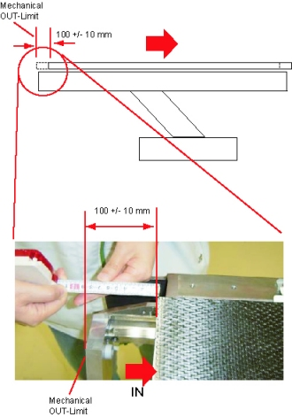
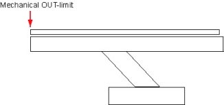

Operating Documentation
Direction 5193575-800, Rev# 5
LightSpeed 7.X Service Information - Adv
Operating Documentation |
| Required Persons | Preliminary Reqs | Procedure | Finalization |
|---|---|---|---|
| 1 | Timing Not Applicable | 30 mins | 15 mins |
| Last Revised: | 12 May 2006 |
| Item | Qty | Effectivity | Part# | Manufacturer | |
|---|---|---|---|---|---|
| a measure | 1 | - | - | - | |
| Follow ALL required safety and PPE procedures customary for your organization, when working on this product. | |
| Condition | Reference | Eff |
|---|---|---|
Only trained service personnel should service the GE CT Scanner. | - | - |
| NOTE: | Do NOT use the cradle service switch to move the cradle. If used, the distance data (by the linear scale) will become invalid. |
Move the table to the proper height position where the cradle can be inserted into the Gantry bore.
Remove the front base cover.
Set the service switch (MODE_SEL) to the SERVICE to enter the service mode.
Confirm that the “CR” LED on the GTCB board in the table is ON. If it is NOT ON, press the “Motion Target” button until “CR” LED is ON.
Illustration 1: LED's on GTCB board

Press the two “Characterize” Buttons at the same time to start characterization.
Illustration 2: Starting Characterization

Confirm that the “UP/IN” LED is ON. See Illustration 1.
Set the cradle latch button to “CR_UNLATCH” position to unlatch the cradle. See Illustration 1.
Move the cradle manually to the mechanical IN-limit position, then move it backward 100 +/- 10 mm.
| NOTE: | If the cradle cannot be moved to the mechanical IN-limit position, move the cradle to 100 +/- 10 mm OUT from the IN-limit position you can move. The cradle characterization will be complete when a distance between the two points for characterization is more than 1000 mm. |
Illustration 3: Position near Mechanical IN-limit

Press the two “Characterize” Buttons at the same time. See Illustration 2.
Confirm that the “DOWN/OUT” LED is ON. See Illustration 1.
Move the cradle manually to the mechanical OUT-limit position, then move it forward 100 +/- 10 mm.
| NOTE: | If the cradle is stuck at the Home lock position when it is manually moved, latch and unlatch the cradle again using the “CR_LATCH” switch to release the home lock. |
Illustration 4: Position near Mechanical OUT-Limit

Press the two “Characterize” Buttons at the same time. See Illustration 2.
Confirm that both of “UP/IN” LED and “DOWN/OUT” LED are ON. See Illustration 1.
Move the cradle manually to the mechanical OUT-limit position.
Illustration 5: Position at Mechanical OUT-limit

Press the two “Characterize” Buttons at the same time. See Illustration 2.
5 - 10 seconds later (to write characterization data to the flash memory), confirm that both of LED's (UP/IN and DOWN/OUT) are OFF.
Confirm that in syslog the cradle characterization completed and “ABS um per count” shows around 20.3 um/count as shown: Cradle characterization completed. char distance = 1854360 um offset counts = 33387434 ABS um per count = 20390354 (scaled by 1000000)
If both of LED's blink during procedures, it means that characterization fails. Retry characterization.
When finished with characterization set the service switch (MODE_SEL) to the NORMAL position for customer use.
Install the covers in the reverse order of removal.